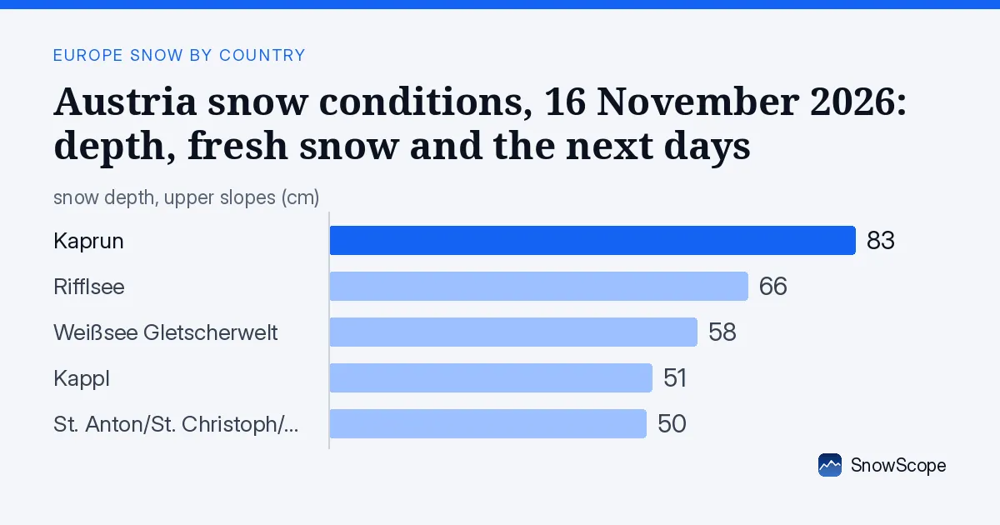
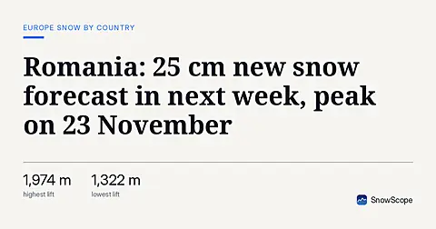

How many Austrian resorts have snow cover? 215 of 277
On 16 November, 215 of Austria's 277 ski resorts have measurable snow somewhere on their slopes. But the practical picture is different: the snow line holds at 1500 metres, so most low-altitude resorts remain bare while upper peaks build steadily toward a busy forecast week.
See the live snow forecast for Kaprun in the SnowScope appSnow depth, powder alerts and the 3D map, free.
What 215 resorts means
In absolute numbers, most Austrian ski resorts now have snow cover of some kind—215 out of 277. But read that carefully. A resort with snow does not mean it is ready to open. The elevation cutoff is brutal. Below 1000 metres, snow cover stands at just 3 per cent. Between 1000 and 1500 metres, only 28 per cent of the area is white. Above 1500 metres, coverage jumps to 71 per cent.
On the ground, you need height to find reliable skiing right now. The main Austrian valleys—the lower Salzburg Alps, the lower Tyrol valleys—are still waiting. This is a mountain-top season so far, and it will stay that way until next week's incoming snow fills in the mid-slopes.
| Resort | Snow depth | New snow, 72 h | Coming, next days | Top |
|---|---|---|---|---|
| Kaprun | 83 cm | 2 cm | 11 cm | 3,024 m |
| Rifflsee | 66 cm | 2 cm | 11 cm | 2,804 m |
| Weißsee Gletscherwelt | 58 cm | 2 cm | 11 cm | 2,555 m |
| Kappl | 51 cm | 3 cm | 17 cm | 2,639 m |
| St. Anton/St. Christoph/Stuben | 50 cm | 3 cm | 18 cm | 2,642 m |

Where snow is deepest
Kaprun leads the country at 83 cm, measured on the upper glaciated zones. Rifflsee follows at 66 cm and Weißsee Gletscherwelt at 58 cm. These high-altitude, glacier-influenced resorts are capturing the first real freeze of the season efficiently. Kappl holds 51 cm and St. Anton 50 cm, both solid starts for November.
The pattern is consistent. Snow depth and elevation track together tightly. The deepest accumulation sits where it is highest and coldest. That is not a surprise in mid-November, but it is a signal that the season is arriving with structure, not random weather.
Snow by elevation
The elevation story defines Austrian conditions right now. At 2000 to 2500 metres, the modelled average depth is 12 cm and 97 per cent of the terrain is covered. Above 2500 metres, the figures improve to 23 cm average and 100 per cent coverage. These are the reliable zones where skiing makes sense.
Between 1500 and 2000 metres, coverage stays high at 71 per cent, but depth falls to only 3 cm average. That is marginal snow—rocks and scree stick through. Below 1500 metres, the picture collapses. The snow line is locked at 1500 metres. Everything lower sits on bare ground or thin patches.
In practice, this means early-season skiing is confined to high peaks. Mid-mountain zones are risky. Valley bases are closed.
What is coming next week
The outlook transforms the equation. Austria faces significant incoming snow. Within the next 7 days, 50 cm will fall across the country. The peak day is 21 November, when 15 cm alone is modelled to arrive on that single day. In just the next 3 days, 11 to 18 cm is expected, depending on location.
Regional differences will shape the outcome. Vorarlberg, already well-placed with 7 cm of new snow in the past 72 hours, sits in the prime position for the incoming Atlantic systems. Tyrol has accumulated 5 cm so far and will capture a good share. The Salzburg Alps, positioned further east, have received only 3 cm in the recent 72 hours and will see less of the incoming surge.
Trend: snow cover growing
In total numbers, 19,550 square kilometres of Austria's 52,110 square kilometres of ski terrain now carries snow cover. That represents 38 per cent white coverage. A week ago, the figure was 16,250 square kilometres. Growth over seven days: 3300 square kilometres. Yesterday to today, Austria gained 800 square kilometres of snow cover.
The trend is upward and accelerating. Early November snow is notoriously fragile, often thin, and easily disrupted by warm air. But the speed of growth observed here—800 square kilometres in 24 hours—suggests a real pattern setting in, not a brief cold snap that will vanish.
Planning your early season
One caveat on the 215 figure: our model estimates snow cover across modelled terrain. Station measurements at resorts like Kaprun show 83 cm, which is a direct measurement of real snow on the ground. Modelled depths in thin-snow zones—for example, the 3 cm average at 1500 to 2000 metres—are estimates of area coverage. Rocks and ridges stick through. Early-season coverage maps can mislead.
The honest summary: Austria is building a foundation for the season. Upper peaks and glaciers are good now. Lower and mid-mountain terrain is waiting. Next week's 50 cm forecast will deepen both levels and open many resorts simultaneously. If you are planning early November skiing today, stick to zones above 2000 metres or the highest glacier areas. By late November, the picture will be much fuller.
Tips for skiers
- Head to zones above 2000 metres elevation or glaciated terrain (Kaprun, Rifflsee, Weißsee Gletscherwelt) for the best skiing today. High-altitude coverage is 97 per cent.
- Vorarlberg offers the best snow right now and the strongest forecast for next week. Tyrol is a close second. The Salzburg Alps are lagging but will improve.
- Mark 21 November on your calendar—15 cm is modelled to fall on that day alone. This single day will fill in mid-altitude zones and make many lower resorts viable.
- Early-season snow is thin and rocks stick up everywhere below 2000 metres. Avoid steep terrain until depths build further. Check the official avalanche bulletin before any off-piste venture.
- Our model estimates area-average depths. Station measurements at individual resorts are more reliable for planning. Thin snow covers thin rock in November.
About these numbers
Resort snow depths are the deepest snow on the resort's upper slopes from the SnowScope snow model (about 1 km, run of 16 November); they are estimates for an area, not a measurement at one point. Station values are measurements on the date shown. Forecasts can change. Always read the official avalanche bulletin before going off-piste.
Cite this report
For research, teaching or the press: the numbers and charts are free to reuse under CC BY 4.0 with this citation.
SnowScope (2026), How many Austrian resorts have snow cover? 215 of 277, https://snowscope.app/blog/en/2026/11/austria-snow-report-16-november-2026.html, accessed 2026-11-16
SnowScope (Atlas Labs). (2026, November 16). How many Austrian resorts have snow cover? 215 of 277. SnowScope snow reports. https://snowscope.app/blog/en/2026/11/austria-snow-report-16-november-2026.html
BibTeX
@misc{snowscope2026austriasnowreport16novem,
author = {{SnowScope (Atlas Labs)}},
title = {How many Austrian resorts have snow cover? 215 of 277},
year = {2026},
month = nov,
howpublished = {\url{https://snowscope.app/blog/en/2026/11/austria-snow-report-16-november-2026.html}},
note = {Published 2026-11-16 20:42 UTC; accessed 2026-11-16}
}· CC BY 4.0 · Methods, data and tools →
Kaprun: snow and temperature by height, this winter vs last (tools) →
Follow Kaprun
Free: a message when fresh snow is coming, and the forecast every morning.
More snow reports

A sudden thaw on 18 November removed most of Ukraine's snow cover in 24 hours. Only 430 km² remained, down from 2,350 km² yesterday. New snow is forecast.

Mild weather erased nearly 490 km² of snow cover across Slovakia on 18 November. The High Tatras still hold 17 cm of new snow from the past 72 hours.

Romania's mountains will see up to 25 cm of new snow in the next 7 days, with 12 cm expected on 23 November. Snow depth and forecast as of 18 November.